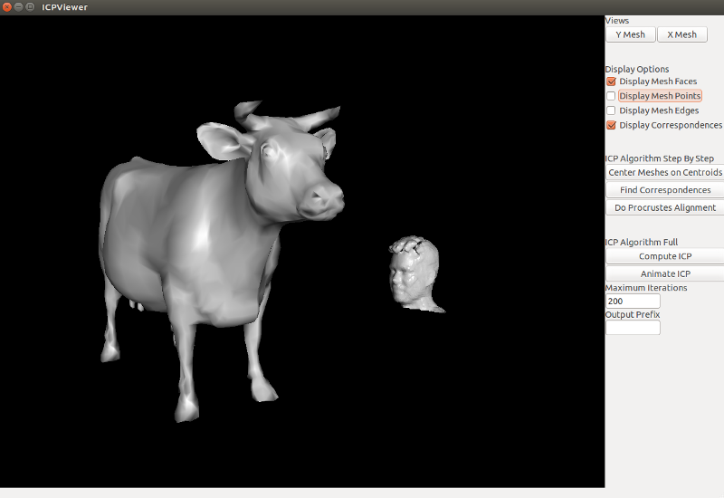
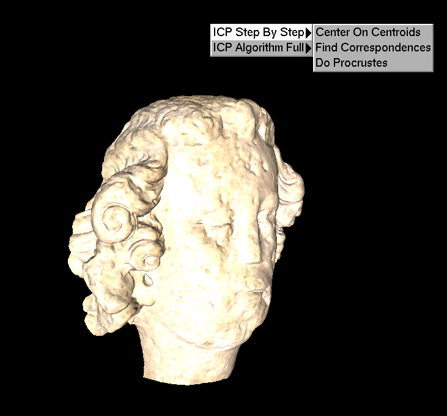
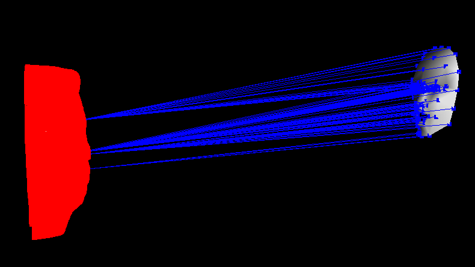

Mini Assignment 3: Iterative Closest Points (55 Points)
By Chris Tralie
Click here to see art contest results!
Overview
The purpose of this assignment is to get students hands on experience computing Procrustes Distance/Alignment and performing the Iterative Closest Points (ICP) algorithm (see Lecture 13 slides for more details). Because of the timing and the subject matter, this can be thought of as the programming part of the midterm, though it will still be grouped in and weighted in the Programming Assignments category
The code in this assignment is overall very short compared to other assignments you have done so far, but you need to be very careful about the finer points of matrix dimensions, transposes, and multiplication order to get this to work properly. This will also give everyone a first exposure to using numpy with geometry, which is needed in group assignment 2. Please have a look at the numpy demos we went over in class for some tricks that might help in this assignment and the next one.
Due Date
This assigment is due at 11:55PM on Sunday 3/13. The first 5 points, which are setting up Python and taking a screenshot, are due on Wednesday 3/9, no exceptions and no partial credit (to make sure people are on track to setting up their Python environment).
Once you are finished, zip up your code and the sequence of images you generated in the examples section. Please also include a README with observations in the testing and examples sections, as well as any comments on the assignment and how many hours it took you.
Getting Started / Codebase
Getting Started
To get started, first download the codeMini3_ICP.zip
To run the code, you will first need to make sure you have Python 2.7 installed, as well as some packages. The packages you need are
- The scipy stack
- PyOpenGL
- wxPython (Under windows I have had more success with the 32 bit version)
sudo apt-get install python-numpy python-scipy python-matplotlib python-opengl python-wxtools
to install everything
If you're starting with a fresh install of Python 2.7, you can make it easier on yourself by downloading the Anaconda Distribution, which comes wrapped with the scipy stack, as well as a very handy debugging tool known as ipython. You will still need to install PyOpenGL and wxPython.
Once you have these packages installed, you can run the file ICPView.py, which is the entry point to running your code, which will be implemented in the file ICP.py. ICPView.py takes two command line arguments. The first argument is the path to the mesh that you want to aligned (referred to as "mesh X" from now on), and the second argument is the path to "target mesh" to which the first mesh will be aligned (called "mesh Y" or the "target mesh" from now on). For instance, if you run
then you should see something like this:

This GUI will help you to debug your code as you write it by showing you what correspondences you have found between two shapes, as well as what your Procrustes alignment step is doing. Left click + drag to rotate the camera, center click + drag to translate, and right click + drag to zoom. You can also compute an entire run of the ICP algorithm and play it back as an animation, and if you enter something into the text field "output prefix," then the program will output a sequence of PNG images that make up the movie. For example, here's what a working implementation would look like aligning the mesh candide.off to the mesh NotreDameFrontHalf.off
candide2NotreDame.ogg |
An example of aligning candide.off to NotreDameFrontHalf.off |
Alternative GLUT GUI
As some people discovered the hard way, wxPython isn't well supported on all new operating systems, especially Mac ones. To help with this, there is an alternative GUI that you can use calledICPViewGLUT.py. There are no textbox inputs enabled in this GUI, so you will have to pass a few more parameters along in the command line. The usage is as follows:
For example
Will start the program with the candide mesh and the Notre Dame mesh, capping ICP at a 200 iterations and saving the video frames with the prefix "candide." The GUI controls are as follows (most of the checkboxes and menu items in the ordinary GUI have been replaced with keyboard shortcuts)
- Left Click + Drag: Rotate Camera
- Center Click + Drag: Translate Camera
- Hold Z Key + Left Click + Drag: Zoom Camera
- X Key: Center on first mesh
- Y Key: Center on second mesh
- P Key: Toggle displaying points
- E Key: Toggle displaying edges
- F Key: Toggle displaying faces
- C Key: Toggle displaying correspondences
- Right Click: Bring up menu for doing ICP steps and animations

NOTE: GLUT seems to have some problems on Windows 10, but the 32 bit version of wxPython for Python 2.7 seems to work fine, so try that first
Additional Installation Instructions
- For those who are having trouble with PyOpenGL and who installed it using pip, it's possible that the pip repository or installer is corrupted. Uninstall PyOpenGL (
pip uninstall PyOpenGL PyOpenGL-accelerate)and try installing it instead from source. You'll have to download the three packages from here
https://pypi.python.org/pypi/PyOpenGL/3.1.1a1
https://pypi.python.org/pypi/PyOpenGL-accelerate/3.1.1a1
https://pypi.python.org/pypi/OpenGLContext
unextract each one, and in each directory type "python setup.py install"
-
For those who are having trouble importing wxpython while using Anaconda Python, this may be because the wxpython module is not installed in the correct place. To make sure it is installed with anaconda type:
conda install -c https://conda.anaconda.org/anaconda wxpython
into the terminal.
You may have another problem that says "please run with a Framework build of python etc...". Not sure why, but when you use pythonw instead of just python before the file name this second problem goes away.
Algorithm Implementation
NOTE: The convention in this assignment is that all point clouds are in 3 x N matrices with points along the columns.Python Setup (5 Points)
As a first step, please setup all of the software packages for Python, as explained above. E-mail Chris with a screenshot ofICPViewer.py running by Wednesday 3/9. All or nothing on these points by that date
Compute Centroid of A Point Cloud (5 Points)
Fill in the methodgetCentroid(PC) in ICP.py to compute the centroid of a point cloud, where the points are along the columns of a 3 x N matrix. So you should return a 3 x 1 matrix representing the centroid. This should be one line of code (hint: use np.mean() along some axis). You can test to make sure it's working properly in ICPViewer by loading two shapes and clicking the "center meshes on centroids" button (Note that this is not exactly what happens in Procrustes alignment, since the centroids of the target mesh are computed on corresponding points only, but it can help you make sure your centroid step is correct). After the centroids are computed, be sure to re-center the camera by clicking the "Y Mesh" or the "X Mesh" views buttons.Brute Force Nearest Neighbor Correspondences (15 points)
Fill in the methodgetCorrespondences(X, Y, Cx, Cy, Rx) in ICP.py. That is, given a centroid estimate for point clouds X and Y and a rotation matrix to align X with Y after centering both on their centroids, you need to compute the nearest neighbors on mesh Y to every point in mesh X. This example from class may be of some help. To complete that example, you need to fill in a matrix D where D[i, j] is the Euclidean or squared Euclidean distance between point i in X and point j in Y, and that code computes the index of the minimum distance along each row. You can use the "find correspondences" button in the GUI to help debug this:
This can all be done without any for loops. If you use a for loop in this function, you can only earn a maximum of 10/15 points. Try to think of how to write all distances from points in X to points in Y as the sum of broadcast matrices and a matrix multiplication, following the hint on the second to last slide of lecture 15 (as well as the other numpy examples), and remembering that matrix multiplication is just a bunch of dot products. Your code will be substantially faster if you can avoid a for loop, since numpy matrix multiplication has been written and complied in C. (Of course if you find another way to do this without for loops leveraging numpy, that is also completely acceptable)
Procrustes Alignment (10 points)
Now that you have correspondences, you can compute the Procrustes alignment between two meshes. Fill ingetProcrustesAlignment(X, Y, idx). To do this, you need to
- Compute the centroid of the points in mesh X
- Compute the centroid of the corresponding points in mesh Y
- After centering each point cloud on its centroid, compute the optimal 3D rotation to get the X points to the Y points
np.linalg.svd should come in handy here. Recall from lecture 13 that the SVD factorization of the matrix ABT, ignoring the scaling matrix, gives you the optimal rotation matrix to rotate point cloud B to align with point cloud A.
NOTE: np.linalg.svd returns a tuple (U, S, VT), so the V matrix is already transposed! (tricky!)
Perform Iterative Closest Points (10 points)
Now that you have the two key steps of ICP implemented (correspondence finding and alignment), you can put them together in a loop and iterate the process. That is, go through the following loop- Given the current estimate of centroids and optimal rotation, compute correspondences
- Given correspondences, re-compute the centroids and optimal rotation. Go back to step 1 and repeat
doICP(X, Y, MaxIters). You should loop as long as the correspondences are all different from the correspondences you got last time. If they are the same, this means that the process has converged. Again, you can check for this without using a loop (you will lose 2 points if you check this with a loop: try, for instance, using some boolean condition and np.sum()). You only have to loop up to the maximum number of iterations, regardless of convergence.
Testing (5 Points)
To make sure your program is working, test it on the example shown above and make sure the "candide" face aligns well to the Notre Dame statue head (replaceICPView.py with ICPViewGLUT.py if you're using that):
Next, try doing this the other way around; that is, aligning
What do you notice? Why is this happening? What does this say about the symmetry (or lack thereof) of the ICP algorithm?
Additional Example / Art Contest (5 Points)
In addition to aligning the face model to the statue, you should try this out on other examples. A variety of meshes are included in the meshes/ directory in the code distribution. Please submit with your assignment a sequence of images that show your program in action aligning one of those meshes to another one, by filling in a string in the "Output Prefix" field before clicking "Animate ICP" (or in the GLUT GUI by providing a fourth command line argument of that prefix). Note that you can move the camera before or during the animation to get a better view.
If you are creative about what you align to what, you can probably create some interesting concepts. Therefore, if you would like, you can also choose to submit your alignment video to the art contest for this assignment. Please indicate that you would like to submit your example and whether or not I can include your name on the course web site (and if not what your pseudonym should be). The winner will get two raffle points. Feel free to use any of the meshes in the Princeton Shape Database as you did for the image source assignment.
Finally, there has been a script provided that facilitates changing the geometry of different meshes before you align them. Check out the file manipulateGeometry.py. That example shows applying a random rotation to an .off file, but you can do anything you want. Remember that the initial guess has a huge effect on ICP, so if you choose a different position or orientation that will influence where the algorithm converges